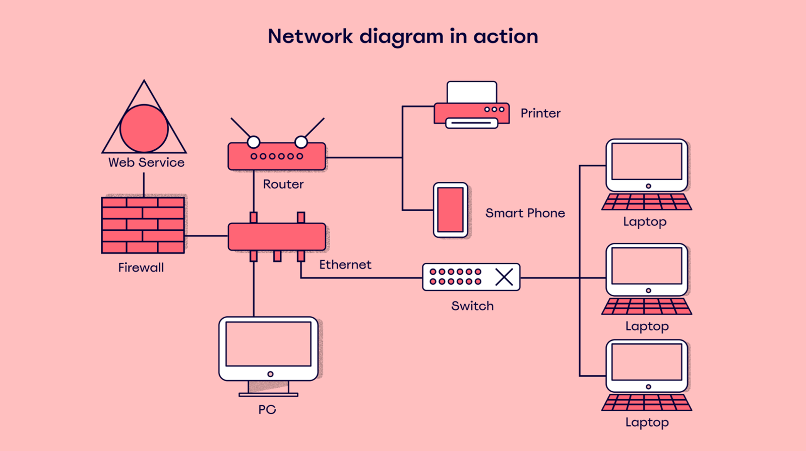
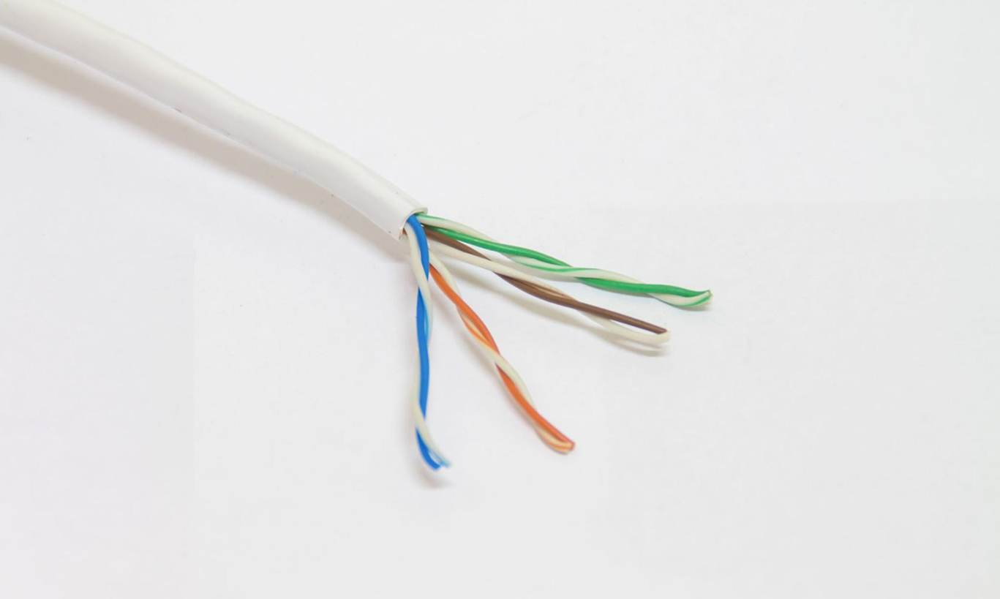
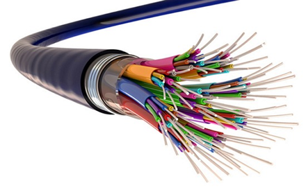

Pertemuan 2
Media Transmisi Jaringan

Ilustrasi media yang menghubungkan antar perangkat
Pada sistem jaringan komputer, data tidak dapat berpindah sendiri dari satu perangkat ke perangkat lain. Diperlukan suatu jalur atau media yang berfungsi sebagai perantara pengiriman informasi. Jalur ini disebut media transmisi.
Media transmisi memungkinkan data digital seperti teks, gambar, suara, dan video dikirim dari perangkat pengirim menuju perangkat penerima melalui jaringan komunikasi.
- Mengirim pesan WhatsApp
- Menonton video YouTube
- Bermain game online
- Video call dengan keluarga
Jenis Media Transmisi
Secara umum media transmisi dibagi menjadi dua jenis utama yaitu media kabel (Guided) dan media nirkabel (Unguided/Wireless).
1️⃣ Media Transmisi Kabel
Media transmisi kabel menggunakan kabel fisik sebagai jalur pengiriman data. Data biasanya dikirim dalam bentuk sinyal listrik atau cahaya di dalam kabel.
A. Kabel Twisted Pair
Kabel ini paling sering digunakan dalam jaringan lokal (LAN). Terdiri dari pasangan kabel yang dipilin untuk mengurangi gangguan sinyal (noise).

Konektor RJ45 dan Kabel UTP
Jenis kabel twisted pair yang populer: UTP (Unshielded) dan STP (Shielded).
B. Kabel Coaxial
Memiliki lapisan pelindung tambahan. Dulu banyak digunakan pada jaringan komputer lama dan televisi kabel.
C. Fiber Optik (Serat Optik)
Menggunakan cahaya untuk mengirim data. Teknologi ini mampu mengirimkan data dengan kecepatan sangat tinggi.

- Kecepatan sangat tinggi & Kapasitas besar
- Jarak transmisi sangat jauh
- Tidak terganggu induksi listrik
2️⃣ Media Transmisi Wireless
Media nirkabel tidak menggunakan kabel. Data dikirim melalui gelombang elektromagnetik di udara.
Contoh Media Wireless:
- WiFi: Koneksi internet tanpa kabel untuk HP/Laptop.
- Bluetooth: Komunikasi jarak dekat.
- Jaringan Seluler: Teknologi 3G, 4G, dan 5G.
Ringkasan Materi
Media transmisi adalah perantara untuk mengirimkan data dalam jaringan. Pilih Kabel untuk stabilitas tinggi, atau Wireless untuk fleksibilitas mobilitas.
Latihan Soal
1. Media yang digunakan untuk mengirimkan data disebut...
2. Kabel yang paling sering digunakan dalam jaringan LAN adalah...
3. Teknologi jaringan tanpa kabel disebut...